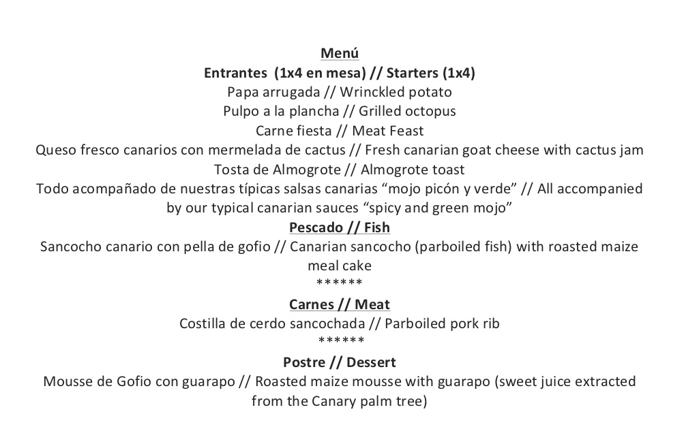
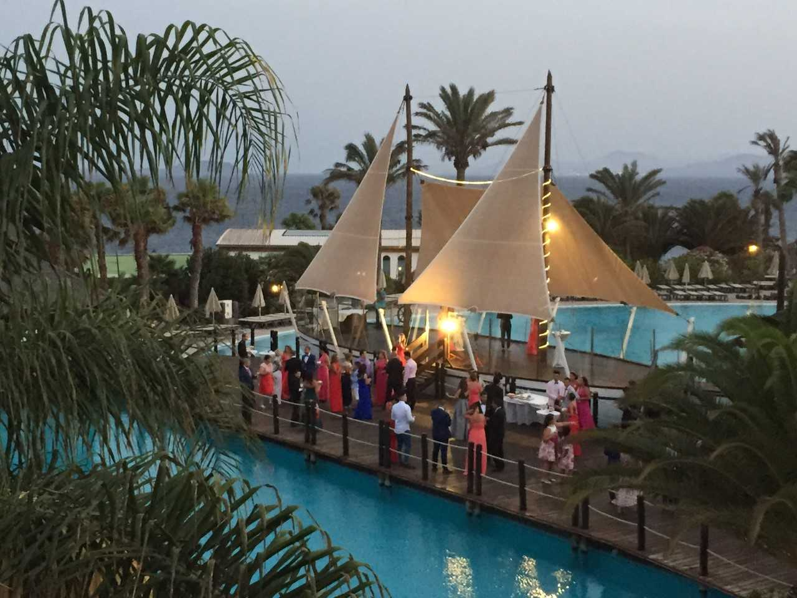
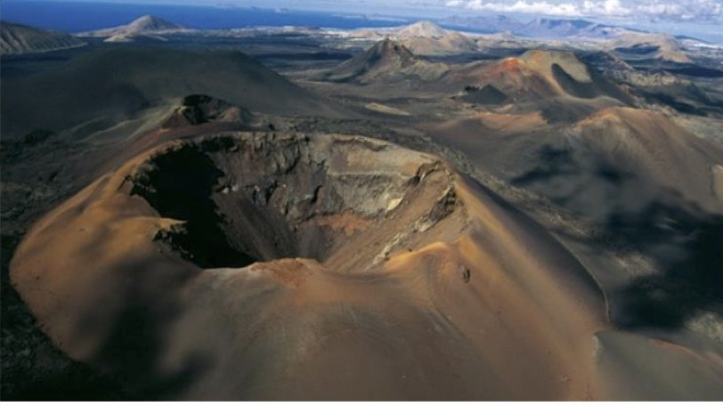
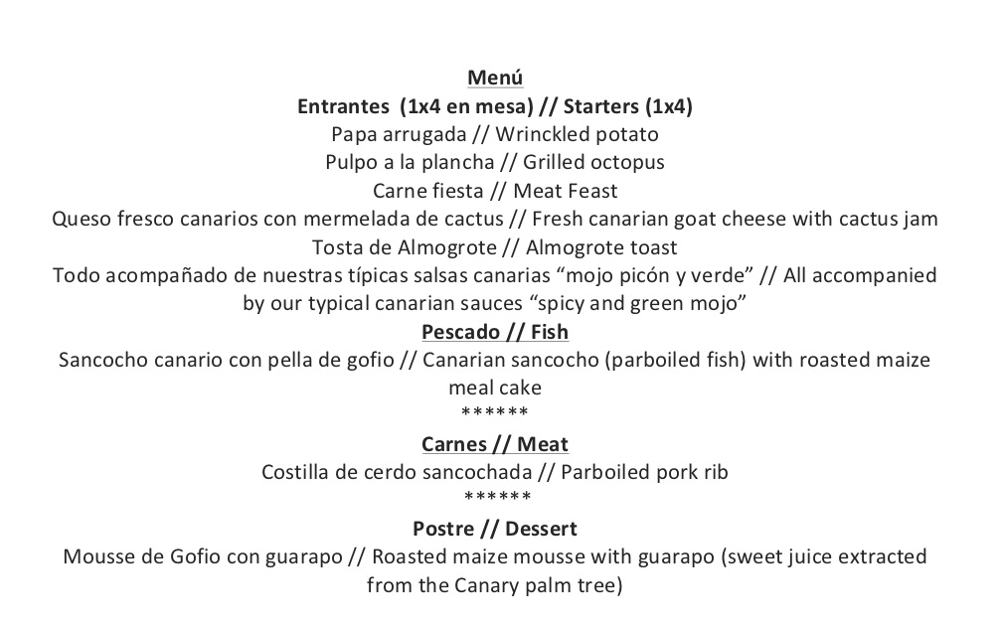

We have organized the following activities for DALI 2017.
On April 2, to celebrate the beginning of DALI 2017, we will offer participants and their families a welcome cocktail consisting of warm and cold tapas. The event will take place on the Boat located at the swimming pools of the conference hotel and will start at 7:30 p.m.
On April 3, during the sessions of DALI's first workshop day, the family members will have the oportunity to visit the Rancho Texas. The park has attractions for both adults and kids of any age, as well as swimming pools to simply relax and enjoy the visit. A bus service will take care of the transportation between the hotel and the park. The bus will depart at 10:30 a.m. from the hotel entrance . Interested family members will need to register in advance to get their tickets.
On April 4, during the lunch break, we will go on an excursion to the Natural Park of Timanfaya, including the vulcano and the sea side. Buses will pick all the participants up at the conference hotel at 2 p.m. All conference attendants and families are very welcome!
On April 5, as DALI's closure event, we invite DALI participants and their families to a Gala dinner at swimming pools areas of the hotel conference. The event starts at 8:30 PM.
